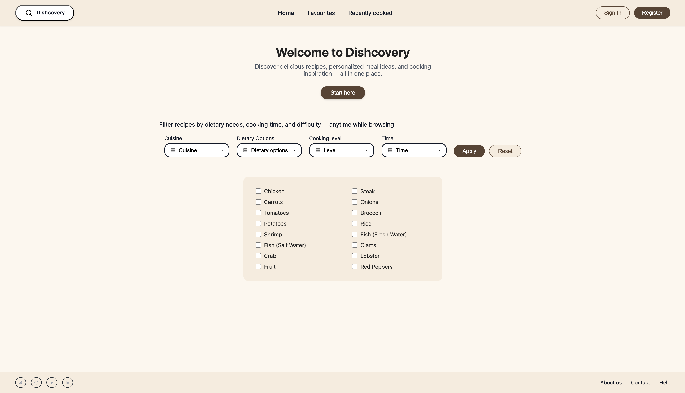
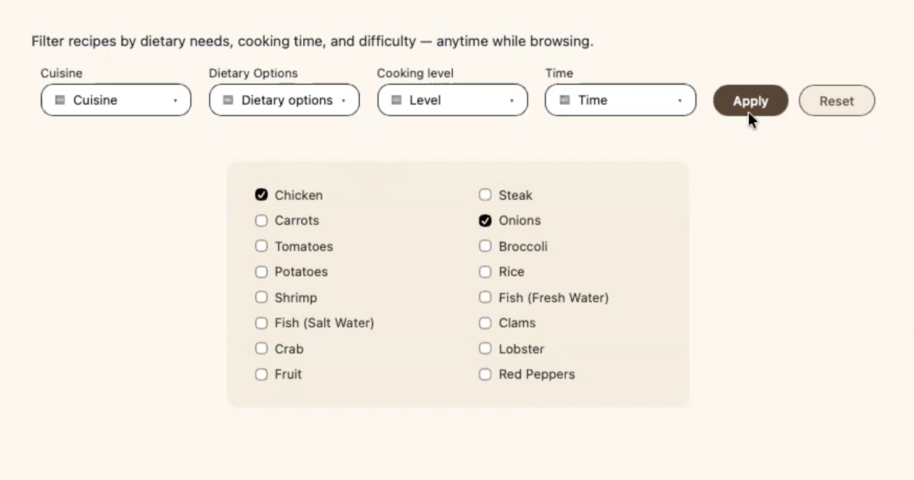
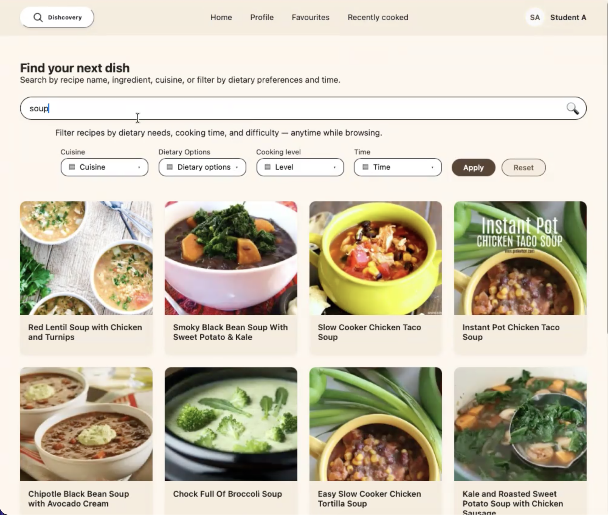

1. Project Overview
Project Name: Dishcovery – Ingredient-Based Recipe Finder
My Role: UI Designer, Front-End Developer, & Team Leader
Team Size: 6
Duration: 16 Weeks
Figma:
View Design
Live Site:
View Deployed Version
Dishcovery is a modern redesign of MyFridgeFood.com focused on helping users find recipes based on the
ingredients they already have. This project emphasizes intuitive UI, faster navigation, and a clean
mobile-friendly layout.
3. My Journey
During this project, I learned how to translate wireframes into clean front-end code while collaborating
with a team. One major challenge was restructuring the original MyFridgeFood layout into something more
modern and visually clear.
I improved skills in responsive design, visual hierarchy, UI consistency, and project communication.
This experience helped me grow as a front-end designer and strengthened my ability to balance user needs
with technical constraints.
4. Visuals
Below are screenshots of the final Dishcovery design:
- Homepage layout

- Ingredient selection interface

- Recipe results page
